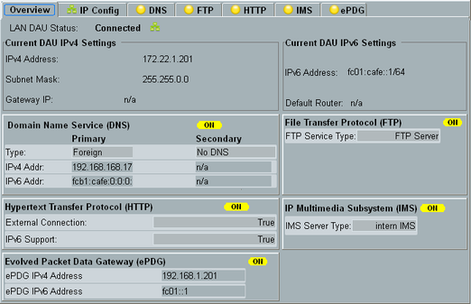

The tab provides an overview of the current IP settings and all DAU services, including the state of each service.

To open the configuration dialog, press the "Config" hotkey.
Display the most important elements of the current IP setup.
For details and configuration, see "IP Config Tab".
Shows the state of the corresponding service and the most important settings.
To start or stop a service, select the corresponding softkey (e.g. "FTP Server") and press [ON | OFF]. Alternatively, right-click the softkey.
The current service state is indicated by the softkey, in the overview and in the title of the corresponding tab.
This checkbox defines the behavior of layer 3, if the higher layers deliver more data than the lower layers can process (maximum throughput of lower layers reached).
- Checkbox disabled:
Packets that cannot be handled by the lower layers are discarded. - Checkbox enabled:
Packets that cannot be handled by the lower layers are added to a buffer for later transmission. If the buffer is full, the higher layers are informed so that they reduce the data rate without causing packet loss.
Enable the checkbox only for TCP high-throughput scenarios where you want as low packet loss as possible and as few retransmissions as possible.
Remote command: